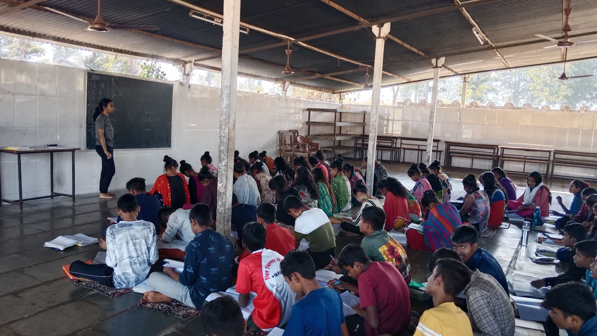

- Daang
- Barmiyad
- Jakhana
- Malegam
- Linga
Prayosha Pratishthan
Dang Swaraj Ashram, Ahwa

Villages We Visited
Covered during rural internship tenure: Conducting surveys, On farm work experience and Teaching students from various classes along with conducting science fair